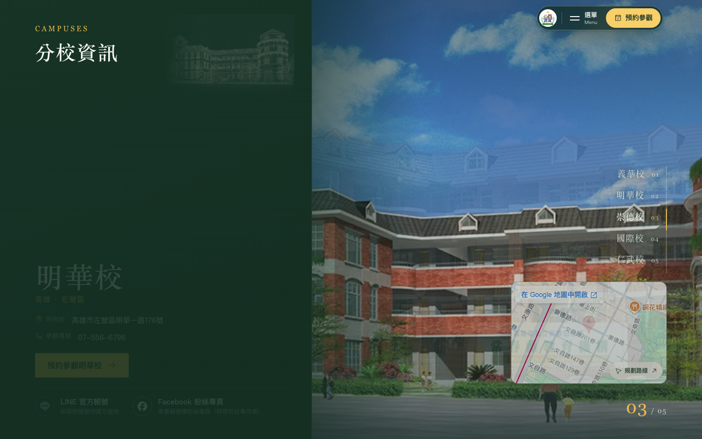

a1 藍圖板 左邊墨綠板子放線稿與資訊，右邊才是照片
線稿不再壓在照片上，而是給它自己的一塊底：左邊 46% 是墨綠色板子，線稿反相成米金色線條像建築藍圖，放大擺在板子上半；校名、地址、預約、社群寫在板子下半，可讀性完全不受照片影響。右邊 54% 是校舍照片。切校時板子上的線稿與文字一起淡入、照片交叉淡入。
開啟 a1 ↗



- 好處
- 線稿是主角、有自己的舞台，不跟照片打架；文字永遠在實底上；照片可以少壓一層陰影。
- 代價
- 照片只剩半邊，「全幅」的氣勢打折；手機版變成上照片、下板子。